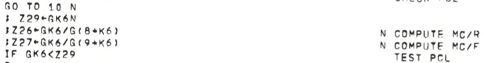
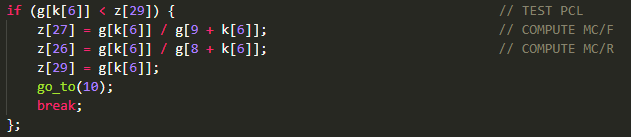
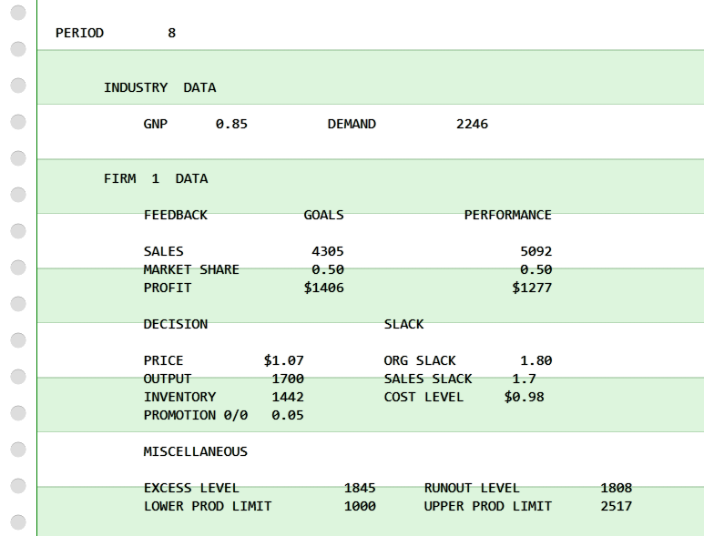
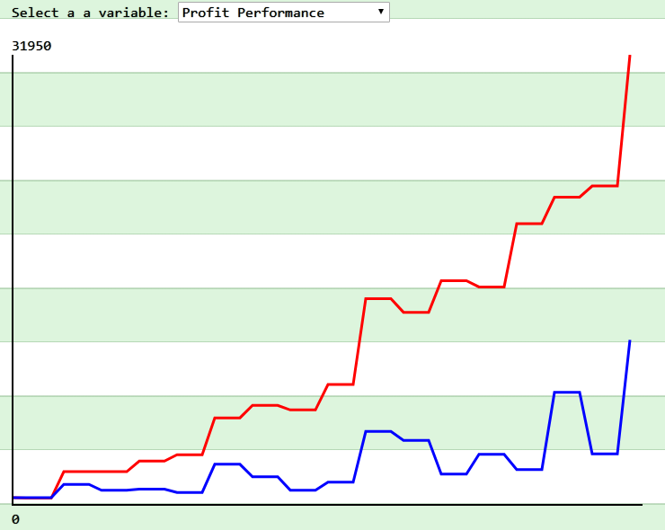

The great thing is, that the book not only contains the verbal description of the theory, but also a real quantitative implementation in the form of a computer simulation program of a duopoly (two-firm) market. Even more great is, that the authors also included the complete source code listing of the program and a full sample printout of a program run in the book (which was actually the reason I bought it in the first place ;-).
The code is written in the ancient programming language 20-GATE (Generalized Algebraic Translator, Extended) for the Bendix G-20 mainframe. In an attempt to have a "perfect" translation of the original 20-GATE program to a modern platform, I hand-translated the 20-GATE code, statement by statement, to a semantically equivalent JavaScript program. Special care was taken to have as much as possible a 1:1 relationship between the original and the translated code and to exactly reproduce the original control flow (with quite some GOTO statements :-).
To make the translation process a little bit clearer, you see in the following a code segment in 20-GATE and its representation in JavaScript:


The original program took a set of punched cards as its input data and produced a long printout of data for 50 time periods. The JavaScript version also generates this printout, but I added also a simple line graph feature to view the development of a selected variable and the possibility to generate and download a "csv" file of all the output data, so that you can analyze it in a spreadsheet, statistics package, or in your own self-written programs.
You can try out the simulation directly in your browser here: Simulation of A Behavioral Theory of the Firm.
I also published the complete source code of my JavaScript program on GitHub.
And here are two screen shots:


The exact citation of the book is:Cyert, Richard M. and March, James G., A Behavioral Theory of the Firm, Englewood Cliffs, NJ, Prentice-Hall, 1963.